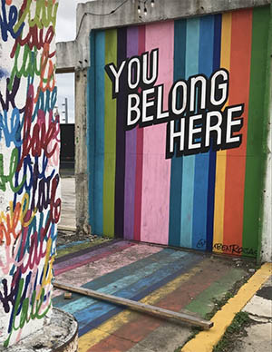

This week I went to Hopscotch witch is an interactive studio. Great for taking pictures with friends. Each space is a different theme. So this would be perfect for instagram, or a place to take friends from out of town. Food and drinks are available.
"Hopscotch is a uniquely curated, permanent 20,000 sq ft gallery which features 14 distinctive immersive and interactive installations from over 40 local, national and international artists. Exhibitions will rotate over time. Our aim is to elicit a sense of joy and wonder in the spaces we curate, where our guests may participate in a playful manner and explore beyond their day-to-day reality."
I loved this space. I could take any kinds of photos I wanted. Either by myself or with friends. Each space was different and unique. I had a great time and I would definitely go back.

If you're around San Antonio, a must by stop is Essex Modern City. It is one of SA's largest outdoor mural gallery. Perfect for music projects or fun times with a group of friends.
"Essex Modern City started as an idea and is now more than a mixed-use urban infill project. It’s a social experiment that believes that good design and technology can create a more enriching way to live. The project is an ongoing nebulous that is morphing into a community of people challenging the status-quo. They are the authors, craftsmen and artists that will curate and write the story of the future."
Admission is free and is perfect for all ages. Essex is open Monday- Friday 8-5, and is located at 51 Essex st, San Antonio, Texas.